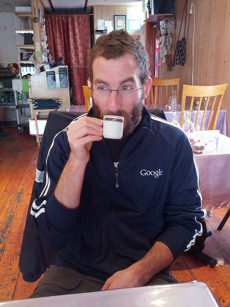

Alex Rudnick
Hello! I'm a phd student working on computational linguistics
and machine learning with
HLTDI.
I've been known to write software while
sitting on a
big
colorful
ball.
My main project these days is tools for
machine translation for under-resourced languages. Particularly, I'm
working on techniques to help the translation system make better word
choices, both through gathering more text and through learning from
the text that we have available.
I also occasionally contribute to NLTK.
Since Fall 2014, I've joined
Google Translate!
contact
- in person: furiously writing dissertation while in Northern
California...
- office hours: Wednesdays 10am or by appointment (though you have to
find me first)
- email: alexr at indiana
pubs, tech reports, workshop presentations
- Clayton A. Davis, Giovanni Luca Ciampaglia, Luca Maria Aiello, Keychul Chung,
Michael D. Conover, Emilio Ferrara, Alessandro Flammini, Geoffrey C. Fox,
Xiaoming Gao, Bruno Gonçalves, Przemyslaw A. Grabowicz, Kibeom Hong, Pik-Mai
Hui, Scott McCaulay, Karissa McKelvey, Mark R. Meiss, Snehal Patil, Chathuri
Peli Kankanamalage, Valentin Pentchev, Judy Qiu, Jacob Ratkiewicz, Alex
Rudnick, Benjamin Serrette, Prashant Shiralkar, Onur Varol, Lilian Weng,
Tak-Lon Wu, Andrew J. Younge, Filippo Menczer.
OSoMe: the IUNI observatory on social media. PeerJ Computer
Science, October 2016.
web
pdf
bibtex
- Yonghui Wu, Mike Schuster, Zhifeng Chen, Quoc V. Le, Mohammad Norouzi,
Wolfgang Macherey, Maxim Krikun, Yuan Cao, Qin Gao, Klaus Macherey, Jeff
Klingner, Apurva Shah, Melvin Johnson, Xiaobing Liu, Łukasz Kaiser, Stephan
Gouws, Yoshikiyo Kato, Taku Kudo, Hideto Kazawa, Keith Stevens, George
Kurian, Nishant Patil, Wei Wang, Cliff Young, Jason Smith, Jason Riesa,
Alex Rudnick, Oriol Vinyals, Greg Corrado, Macduff Hughes, Jeffrey
Dean. Google's Neural Machine Translation System: Bridging the Gap
between Human and Machine Translation. Google tech report released
on arXiv, September 2016.
web
pdf
- Alex Rudnick, Levi King, Can Liu, Markus Dickinson and Sandra Kübler.
IUCL: Combining Information Sources for SemEval Task 5.
Proceedings of the 8th International Workshop on Semantic Evaluation
(SemEval 2014).
pdf
bibtex
- Alex Rudnick, Taylor Skidmore, Alberto Samaniego and Michael Gasser.
Guampa: a Toolkit for Collaborative Translation.
Ninth International Conference on Language Resources and Evaluation (LREC 2014).
pdf
summary with bibtex
- Alex Rudnick, Annette Rios and Michael Gasser.
Enhancing a Rule-Based MT System with Cross-Lingual WSD.
The 9th International Workshop of the Special Interest Group on Speech and
Language Technology for Minority Languages (SaLTMiL 2014).
workshop proceedings
- Alex Rudnick and Michael Gasser.
Lexical Selection for Hybrid MT with Sequence Labeling.
Second Workshop on Hybrid Approaches to Translation
(HyTra 2013).
pdf
bibtex
- Alex Rudnick, Can Liu, and Michael Gasser.
HLTDI: CL-WSD Using Markov Random Fields for SemEval-2013 Task
10.
Proceedings of the 7th International Workshop on Semantic Evaluation
(SemEval 2013).
pdf
bibtex
slides
- Pavel Golik, Boulos Harb, Ananya Misra, Michael Riley, Alex Rudnick,
and Eugene Weinstein. Mobile Music Modeling, Analysis and
Recognition. International Conference on Acoustics, Speech, and
Signal Processing (ICASSP) 2012.
abstract
pdf
bibtex
- Karissa McKelvey, Alex Rudnick, Michael Conover and Filippo Menczer.
Visualizations of Communication on Social Media: Making Big Data
Accessible. Computer Supported Cooperative Work 2012 - Collective
Intelligence as Community Discourse and Action.
pdf
- Alex Rudnick. Towards Cross-Language Word Sense Disambiguation
for Quechua. RANLP 2011 Student Research Workshop.
pdf
bibtex
poster
- Alex Rudnick. A resource-light approach to learning verb
valencies. MTML 2011.
pdf
slides
- James Clawson, Kent Lyons, Alex Rudnick, Robert A. Iannucci Jr.,
and Thad Starner.
Automatic whiteout++: correcting mini-QWERTY typing errors using
keypress timing.
CHI'08.
pdf
bibtex
- James Clawson, Alex Rudnick, Kent Lyons, and Thad Starner.
Automatic Whiteout: Discovery and Correction of Typographical
Errors in Mobile Text Input.
MobileHCI'07.
pdf
bibtex
teaching
also